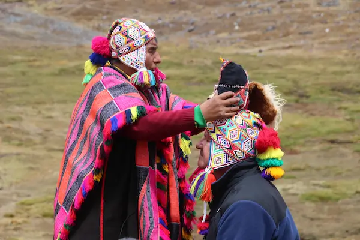
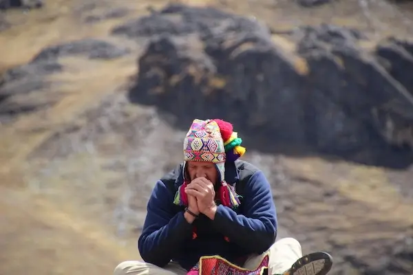
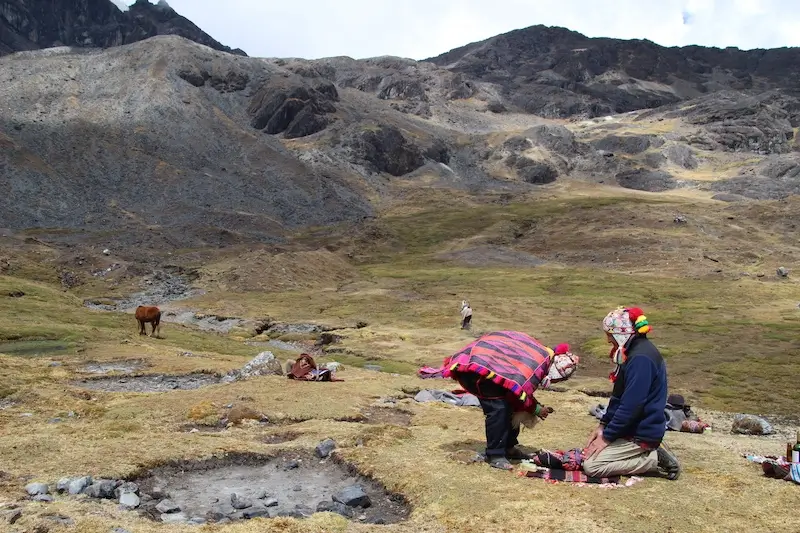

Shaman John Whitehorse | Shamanic Energy Healing | Shaman Training | Indigenous Shamanic Rites and Initiations | Personal Healing Retreat | Spiritual Travel to Peru
Located in Denver, Colorado and Santa Fe, New Mexico
Virtual sessions offered

THE PATH INTO PERSONAL GROWTH BEGINS WITHIN
ONE STEP AT A TIME.
WHAT IS SHAMANIC TREKKER?
Shamanic Trekker is about the journey into your soul to retrieve your power with shamanic energy medicine. Shaman John Whitehorse provides private shamanic healing sessions, shamanic divination, and life coaching. In-person sessions are offered in his Santa Fe, New Mexico healing studio and in Denver, Colorado. Virtual shamanic healing sessions are offered worldwide via Zoom and FaceTime on Facebook. John Whitehorse has graduated from the Light Body School with the Four Winds Society by Alberto Villoldo, Ph.D. John has worked side-by-side with the indigenous shamans of Peru from the Q’ero tribe in ceremony and received ancient energetic rites from a lineage that dates back 1,500 years. Additionally, Shamanic Trekker hosts trips to Peru for small groups and weekend retreats in the Southwest. John Whitehorse offers intuitive stone readings, soul retrievals, chakra balancing and negative energy clearing using the tools and practices of the indigenous Shamans of the Q’ero tribe in Peru.
John Whitehorse Receiving the Sacred Rites, Energetic Transmissions and Initiations in Peru from the Lineage of the Q’ero Shamans



Join John Whitehorse on a Peru Sacred Journey with the Shamans:
Indigenous Shamanic Healing Arts Culture Immersion
A trekker is a person who journeys on foot through mountains
You may feel as if you have a mountain to climb to release your personal pain and to experience happiness and joy again. But a physical journey is not so different than your spiritual journey. You come across forks in the road, distractions in our busy world seem to come at you from every direction.
Yet there is beauty all around us…are we present enough to even see them, yet alone enjoy them? Modern shamanism returns our focus to those essential qualities of spirituality. Regular shamanic practice helps us reconnect with what is vital, meaningful and spiritually nourishing in life.
It is a fundamental gift to recognize the living sacredness of all things-animal and plants, stone and water, light and sound, stories and ideas. Together we use ancient shamanic healing methods and energy medicine to support you on this journey.
OUR BIRTH INITIATES THE JOURNEY OF OUR LIFE
Though our world is very different from the one our ancestors lived in, there is still universal truths we share. In every time and place, the majesty of nature calls to the human heart.
Beautiful music stirs the soul. Great stories stay with us and allow us to inhabit different places and times. Do we take this journey unaware, accidentally bumping into our destiny, tripping over our life purpose, and stumbling upon the unexpected? Or, do we embark on this journey fully aware with conscious intention, learning from our life experience, embracing our life purpose and remembering the wisdom available at all times within our soul?
John supports you on your personal journey. Whether, you travel within your soul or travel to inspiring places close to home or that sacred place around the globe. Live with Intention. Dream your life into being.
Discover the Path to Truly Connect with Yourself
and Create Your Own Personal Journey that will:
Connect with Your Higher Consciousness and Activate a Sustained Flow of Joy and Well-Being
Your private Shamanic Energy Medicine Healing session is held in a sacred space created by John before you arrive. Allowing you to release blocking energy and emotions that no longer serve you or hold you back. It’s a safe and relaxing sacred space, so all you have to do is show up and follow your heart’s desire and intention.
MEET YOUR SHAMANIC SAGE, JOHN WHITEHORSE
John Whitehorse is a shaman trained by the Four Winds Society and initiated in Peru by indigenous Shamans of the Q’eros. John has been initiated with many powerful rites including the Nine Rites of the Munay-Ki through energetic transmission. These ancient rites were received directly from the shamans in Peru, which initiated him to become a person of wisdom and power who lives free of fear and abides in his eternal nature. John also received the Rites of the Ayni Carpi, which symbolize coming into the right relationship with the universe, and the Pampamesayok Rites, which are the Earth Keeper Rites that make you a steward for the earth as well as for the ebb and flow of the seasons, death and life. John works with individuals and small groups in private sessions, workshops and retreats. As a guide, John takes intimate groups of individuals looking for a deeper connection to their soul and a spiritual experience on a trek of their lifetime.
His private sessions are used to: reduce stress and anxiety, break negative patterns, activate happiness and joy, increase your sense of well-being, help you manage life transitions such as divorce, death of a loved one, health issues, and unexpected events such as accidents and emotional conflict. Symptoms including depression, insomnia, panic, repetitive thoughts, emotional highs and lows, and fatigue can be relieved or eliminated with a series of shamanic healing sessions.
PRAISE FOR SHAMANIC TREKKER
Shamans work in the invisible realms to weave a new fabric of reality into being and bridge healing energies from the spiritual worlds into our tangible realm. They do this work by performing ceremonies. And the power of ceremony is that they create change.
-Sandra Ingerman